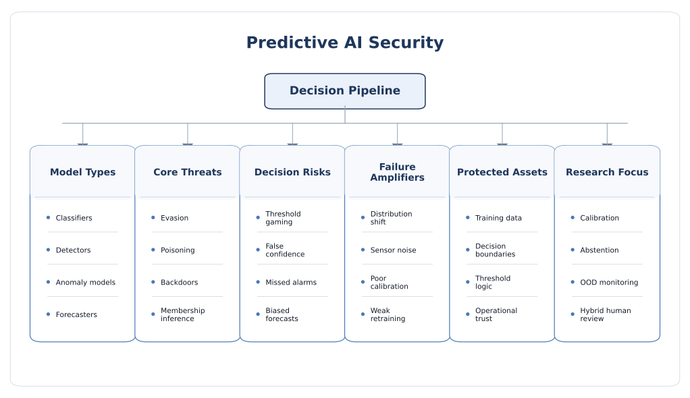

Predictive AI Security
Predictive AI security focuses on models that output labels, scores, rankings, alarms, or forecasts. These systems often sit directly inside decision loops—medical triage, fraud detection, malware analysis, biometric verification, industrial monitoring, recommendation, and forecasting—so a small integrity or privacy failure can have immediate operational consequences.
Why predictive AI deserves its own security lens
Predictive AI covers classic supervised and semi-supervised systems that estimate a future or hidden quantity from input data. Typical examples include image and signal classifiers, anomaly detectors, malware detectors, spam filters, recommender and ranking engines, biometric authenticators, medical diagnostic aids, and time-series forecasters for energy, traffic, finance, or maintenance. These systems are sometimes perceived as simpler than generative AI because they return structured outputs instead of long-form content. In security terms, however, that structure can make them even more tightly coupled to real decisions.
The core issue is that predictive models often act as decision gates. A fraud score may trigger an investigation, a detector may open or close access, a medical classifier may influence treatment priority, and a forecasting model may shape inventory, scheduling, or grid control. This means the attacker does not need to fully “break” the model. It may be enough to move the decision boundary, alter confidence, suppress an alarm, or bias a forecast slightly but consistently.
What belongs under predictive AI
- Classification: malware detection, biometrics, content moderation, quality control, diagnosis.
- Detection: intrusion detection, object detection, event detection, defect detection, fraud detection.
- Anomaly detection: industrial monitoring, cybersecurity alerts, fault detection, sensor health.
- Ranking and recommendation: search ordering, ad ranking, product recommendation, prioritization engines.
- Forecasting: energy demand, traffic flow, stock movement, maintenance timing, operational planning.
- Risk scoring: credit, insurance, triage, churn, compliance, and trust or reputation systems.
Why predictive AI security is different from generative AI security
- Output semantics are narrower: the model typically returns a score, label, rank, or forecast rather than open-ended content.
- Decision coupling is stronger: even a small numerical error can flip a downstream threshold-based action.
- Attack goals are often targeted: evade one class, suppress one alert, raise one risk score, or bias one forecast window.
- Evaluation can be misleading: average accuracy may look good while rare but high-value failures remain exploitable.
- Confidence outputs matter: probabilities, margins, and abstention behavior can leak information or be strategically manipulated.
Security goals at the predictive layer
- Integrity: predictions should remain reliable under adversarial, noisy, shifted, or strategically chosen inputs.
- Confidentiality: the model should not leak sensitive training data, proprietary behavior, or internal thresholds.
- Availability: the detector or predictor should remain usable under overload, abusive queries, or alert-flooding conditions.
- Calibration: confidence values should reflect uncertainty rather than giving false assurance.
- Robust abstention: the system should know when to defer, quarantine, or request human review.
- Traceability: operators should be able to audit why a decision changed and whether drift or attack is involved.

Threat model and predictive attack surface
A predictive-AI threat model should specify when the attacker intervenes, what they can manipulate, how much they know about the model, and what decision they want to change. In many deployments, the adversary does not need white-box access. Black-box query access, partial data influence, or control over a sensor or upload channel may already be enough to cause targeted harm.
Attacker positions
- Inference-time attacker: modifies inputs at test time to cause misclassification, missed detection, or biased scoring.
- Training-time attacker: poisons datasets, labels, or feature pipelines to degrade the learned decision function.
- Query attacker: probes the model API to infer boundaries, steal behavior, or recover sensitive training membership.
- Pipeline attacker: manipulates preprocessing, feature extraction, thresholds, calibration, or post-processing logic.
- Sensor or data-source attacker: corrupts or perturbs the upstream measurements feeding the model.
- Insider or privileged attacker: changes labels, evaluation sets, deployment thresholds, or alert-routing logic.
Attacker goals
- Evasion: avoid being detected or classified correctly.
- Targeted manipulation: force a specific class, score, rank, or forecast change.
- Backdoor triggering: activate hidden behavior with a trigger pattern.
- Privacy inference: learn whether specific records were in training or reconstruct sensitive properties.
- Model theft: replicate the target model’s functionality or decision logic.
- Operational disruption: cause alarm floods, suppress alerts, or induce poor planning decisions through biased forecasts.
Major threat classes
1. Evasion and adversarial examples
Evasion attacks alter inference-time inputs so the model makes an incorrect prediction while the manipulated input remains close to benign data under some metric or to a human observer. This is the classic adversarial-example setting, but in predictive AI it appears in many forms: image perturbations, malicious feature shaping in tabular data, manipulated network traces, adversarial sensor readings, or crafted time-series segments.
- Classifier evasion: move a sample across a decision boundary.
- Detector evasion: suppress alarms without significantly changing observable behavior.
- Forecast manipulation: nudge historical input windows so the future prediction shifts in the attacker’s favor.
- Ranking manipulation: alter features so one item is promoted or demoted in a ranked list.
2. Data poisoning and backdoors
Poisoning attacks compromise the learning stage. The attacker injects malicious samples, changes labels, biases features, or influences updates during training. The goal may be broad accuracy degradation, class-specific failure, or insertion of a backdoor that behaves normally until a hidden trigger appears. Predictive systems are especially sensitive to poisoning when datasets are large, weakly curated, continuously updated, or aggregated from many sources.
- Availability poisoning: reduce overall performance and trustworthiness.
- Targeted poisoning: bias one class, user, entity, or operating region.
- Backdoors: implant a trigger that induces misprediction on demand.
- Online and federated poisoning: exploit feedback loops or distributed updates to gradually distort the model.
3. Privacy leakage: membership inference and inversion
Predictive models can leak information about their training data. An attacker may determine whether a specific example likely belonged to the training set, infer sensitive attributes associated with a record, or reconstruct representative features from model outputs. These risks matter particularly in healthcare, biometrics, user profiling, and other data-sensitive domains where confidence outputs are exposed or overfitting is present.
- Membership inference: infer whether a record was used in training.
- Attribute inference: estimate hidden sensitive features correlated with predictions.
- Model inversion: recover feature patterns representative of a class or individual.
- Confidence abuse: exploit detailed probabilities or margins to strengthen privacy attacks.
4. Model extraction and decision-boundary theft
Many predictive models are deployed behind queryable APIs. Repeated querying can reveal their behavior well enough to train a substitute model, estimate thresholds, infer features of the architecture, or build transfer attacks. Model stealing is especially attractive for niche, high-value models such as fraud detectors, recommendation engines, or industrial predictors where the learned mapping itself carries commercial value.
- Rich confidence outputs make extraction easier.
- Even partial extraction can support stronger evasion attacks.
- Attackers may use extraction not only for theft, but also to benchmark and probe a defender’s operating boundaries.
5. Calibration abuse and threshold gaming
Predictive systems are often coupled to thresholds: a sample above 0.9 is blocked, a sample below 0.2 is approved, an anomaly score above a cutoff raises an alarm. Attackers can therefore target not just the predicted label, but the confidence regime itself. If the model is poorly calibrated, an attacker may induce overconfident wrong predictions or operate consistently near thresholds where the system is unstable.
- Threshold gaming is common in fraud, moderation, ranking, and access-control workflows.
- Poor calibration makes triage and human review policies less reliable.
- Abstention mechanisms can help, but only if they are themselves robust to strategic inputs.
6. Distribution shift and out-of-distribution failure
Not all predictive failures are caused by an intelligent adversary. Real deployments experience drift, changing environments, new classes, sensor aging, domain shift, and feedback effects. Security becomes involved when attackers intentionally exploit these weak generalization regions or deliberately create conditions that push the model outside its training distribution. In practice, many incidents are hybrids of attack and drift rather than one or the other alone.
7. Anomaly-detection fragility
Anomaly detectors deserve special attention because the notion of “normal” is itself data-dependent and often unstable. Attackers can poison the baseline, mimic benign profiles, or slowly shift behavior to make malicious activity appear normal. This is important in cyber defense, ICS monitoring, predictive maintenance, and fault detection, where the operator may trust the detector precisely when it is easiest to manipulate.
8. Forecasting-specific manipulation
Time-series forecasters introduce their own attack surface. Historical windows, periodic structure, trend decomposition, seasonality assumptions, and multivariate couplings create opportunities for targeted perturbation. An attacker may modify only a small fraction of the input window, yet cause a meaningful downstream error in load balancing, inventory planning, traffic control, or market decisions.
- Short-horizon errors can cascade into long-horizon planning mistakes.
- Multivariate forecasting expands the attack surface because correlated channels can be perturbed strategically.
- Robustness is harder when the ground truth is only available later and the system operates continuously.
9. Explainability and audit-surface manipulation
In high-stakes settings, defenders increasingly rely on feature attribution, saliency, uncertainty estimates, or explanation dashboards. But these too can be manipulated. An attacker may not only fool the model, but also shape the explanation so the failure appears benign, which is especially dangerous when operators trust explanation tools as a security signal.
Countermeasures and robust deployment principles
There is no single defense for predictive AI security. Strong practice combines data governance, model hardening, confidence management, deployment controls, and operational monitoring. The best defenses are usually layered: make the model harder to fool, make the interface harder to exploit, and make the surrounding decision process less brittle when the model is uncertain.
1. Data-centric hardening
- Provenance and lineage: track where training, validation, and test data came from and how labels were produced.
- Dataset hygiene: deduplicate, inspect label noise, detect suspicious clusters, and monitor class balance.
- Backdoor screening: search for unusual trigger-like patterns, shortcut correlations, or mislabeled micro-clusters.
- Secure update paths: review online-learning, active-learning, and feedback loops before allowing automatic retraining.
- Domain-specific validation: include physical or operational plausibility checks, not only statistical checks.
2. Robust training and model hardening
- Adversarial training: incorporate hard or adversarial examples during training where appropriate.
- Regularization and margin improvement: reduce brittle overfitting and overly sharp decision boundaries.
- Ensembles and diversity: reduce single-model fragility, especially in anomaly detection and forecasting.
- Backdoor-resistant training: combine filtering, robust objectives, and trigger-aware analysis for sensitive domains.
- Domain-aware augmentation: improve resilience to plausible perturbations, sensor variation, and operational drift.
Robust training helps, but it rarely covers the full attack space. A model hardened against one perturbation type may still leak training data, drift badly under distribution shift, or remain exploitable through its API.
3. Uncertainty estimation, calibration, and abstention
- Calibrate predicted probabilities so confidence better matches real error likelihood.
- Use uncertainty-aware inference for triage, quarantine, or human review decisions.
- Implement abstention or reject options for samples near unstable decision regions.
- Separate operational thresholds by risk level rather than treating every decision as equally consequential.
- Continuously test whether calibration degrades under attack, drift, or class imbalance.
This is one of the most practical defenses for predictive AI because many deployed harms come not from a wrong label alone, but from the system being unjustifiably confident when wrong.
4. API and output-surface control
- Reduce unnecessary confidence exposure, top-k detail, or debugging metadata.
- Apply rate limiting, authentication, and anomaly detection to queryable endpoints.
- Use separate interfaces for internal diagnostics and external users.
- Detect extraction-like or boundary-probing query patterns.
- Audit score distributions and usage patterns over time for suspicious shifts.
5. Privacy-preserving training and inference
- Differential privacy: reduce leakage about individual training examples when the utility trade-off is acceptable.
- Secure aggregation or federated safeguards: protect updates in distributed training settings.
- Output minimization: share only what downstream users truly need.
- Access segmentation: restrict who can view raw model outputs, logs, or internal embeddings.
6. Drift and out-of-distribution monitoring
- Monitor feature distributions, class priors, seasonal changes, and sensor health in production.
- Use OOD detectors or shift tests where the domain supports them.
- Separate benign drift from suspicious or attack-induced deviations when possible.
- Retrain only through controlled pipelines with evaluation gates, not automatic blind updates.
- Include stress scenarios that reflect realistic deployment changes rather than only static benchmarks.
7. Human-in-the-loop and hybrid decision logic
- Keep human review for high-impact, low-frequency, or high-uncertainty decisions.
- Use rule-based guardrails alongside learned models in safety- or security-critical workflows.
- Design escalation paths for uncertain or contradictory model outputs.
- Avoid single-threshold automation when the consequence of a wrong prediction is severe.
8. Cross-layer protection for deployed products
- Protect the surrounding software pipeline, not just the model weights.
- For edge or embedded deployment, combine software defenses with hardware-aware protections and secure execution paths.
- Audit preprocessing, feature extraction, post-processing, and threshold logic because attackers often target those seams.
- Correlate model anomalies with system telemetry, sensor integrity, and operator feedback.
Open research challenges and future directions
Predictive AI security is one of the most mature subfields of AI security, yet many deployed systems are still evaluated too narrowly. Benchmark robustness under one attack setting does not automatically translate into trustworthy behavior in live products that face distribution shift, adaptive attackers, missing data, imperfect sensors, changing thresholds, and human intervention.
1. Benchmark robustness still overstates real trust
Many results are reported for one dataset, one norm-bound perturbation, or one white-box setting. Real deployments mix black-box attackers, process variation, sensor noise, drift, partial observability, and system-level constraints. The field still needs evaluation methods that better represent those conditions.
2. Confidence and calibration remain underappreciated security issues
Accuracy alone is not enough. In threshold-driven deployments, calibration quality, abstention policy, and operator trust calibration can matter as much as raw prediction error. Security research still underemphasizes the interaction between adversarial robustness and reliable uncertainty.
3. Predictive systems are often studied without their decision context
A predictive model is rarely the final actor. It feeds alarms, queues, interventions, rankings, prices, or physical control decisions. Future work needs to measure how attacks propagate through that larger decision process instead of only reporting model-level degradation.
4. Forecasting security is still comparatively young
Time-series forecasting is increasingly used in critical infrastructure and operations, but its security evaluation is much less standardized than image classification. Stronger threat models, realistic perturbation constraints, and long-horizon impact metrics are still needed.
5. Anomaly detection remains hard to secure formally
Because anomaly detection depends on shifting definitions of normality, it is difficult to build guarantees that survive nonstationarity and adaptive adversaries. Better theory and practice are needed for robust anomaly scoring under change.
6. Privacy and utility are still difficult to balance
Differential privacy, output reduction, and conservative interfaces can reduce confidentiality risk, but may also reduce performance or usability. The field still needs clearer guidance on where these trade-offs are worthwhile in high-value predictive deployments.
7. Explanation tools can be attacked too
Security evaluations increasingly rely on saliency, attribution, and explanation interfaces, yet these may be unstable or manipulable. A future challenge is building explanation methods that remain useful under adversarial conditions rather than merely looking plausible.
8. Cross-layer integration is still weak
Predictive AI research often stops at the software layer, even though real deployments may be in cloud services, edge devices, or sensor-driven physical systems. Stronger cross-layer work is needed to connect predictive-model failures with infrastructure security, hardware leakage, and system-level safety consequences.
9. Future direction
- Security-aware calibration, abstention, and risk-sensitive decision thresholds.
- Forecasting-specific robustness benchmarks with realistic temporal and operational constraints.
- Robust anomaly detection under adaptive behavior and distribution change.
- Joint evaluation of model attack surfaces and downstream decision impact.
- Hybrid assurance frameworks combining statistical robustness, privacy, and system monitoring.
- Cross-layer research connecting predictive AI with cloud, edge, hardware, and physical deployment models.
Selected readings and frameworks
The references below provide a strong starting point for predictive-AI security, from core adversarial ML taxonomies to privacy, model stealing, and forecasting-specific robustness work.
- NIST AI 100-2 (2025): Adversarial Machine Learning Taxonomy and Terminology
- NIST AI Risk Management Framework (AI RMF)
- MITRE ATLAS
- Membership Inference Attacks on Machine Learning: A Survey
- I Know What You Trained Last Summer: A Survey on Stealing Machine Learning Models and Defences
- Robust Multivariate Time-Series Forecasting: Adversarial Attacks and Defense Mechanisms
- Adversarial Attacks and Defenses in Explainable Artificial Intelligence
- Membership Inference Attacks on Large-Scale Models
- Stealing Machine Learning Models via Prediction APIs